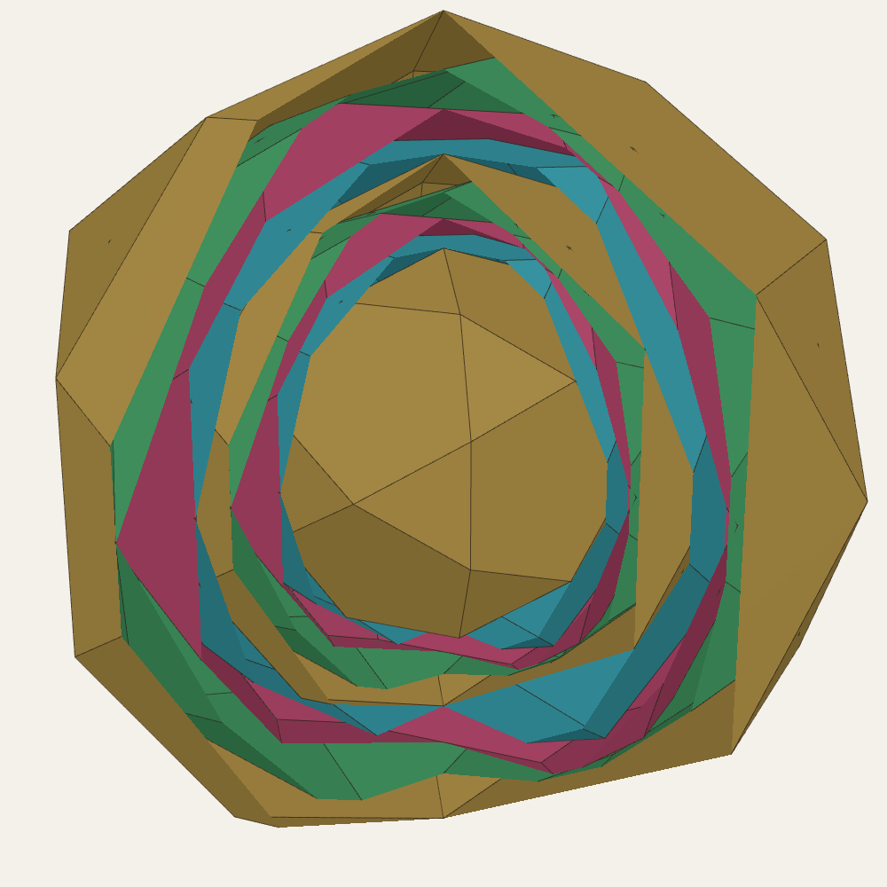
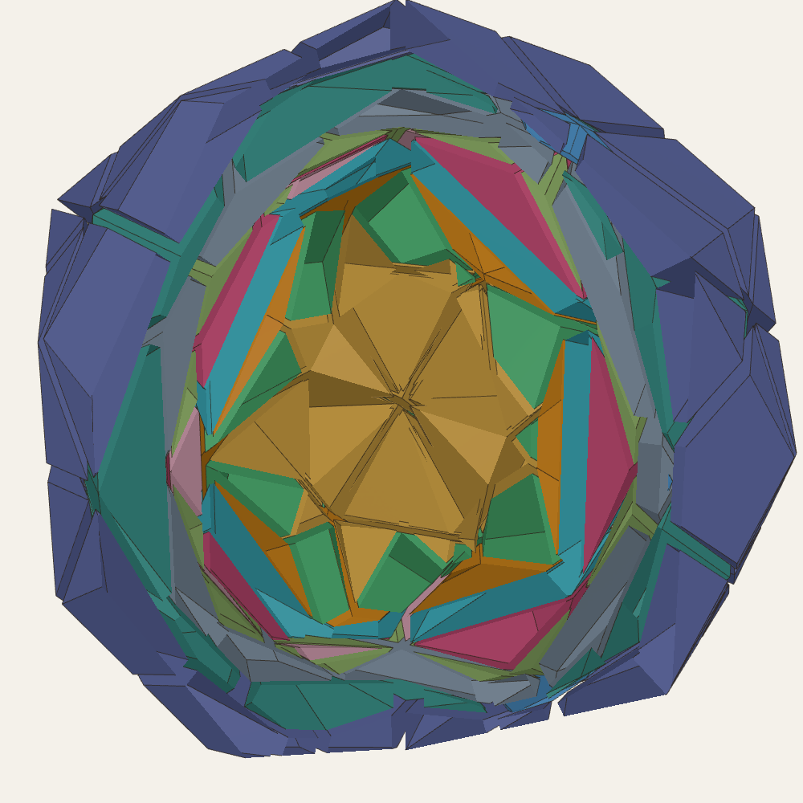
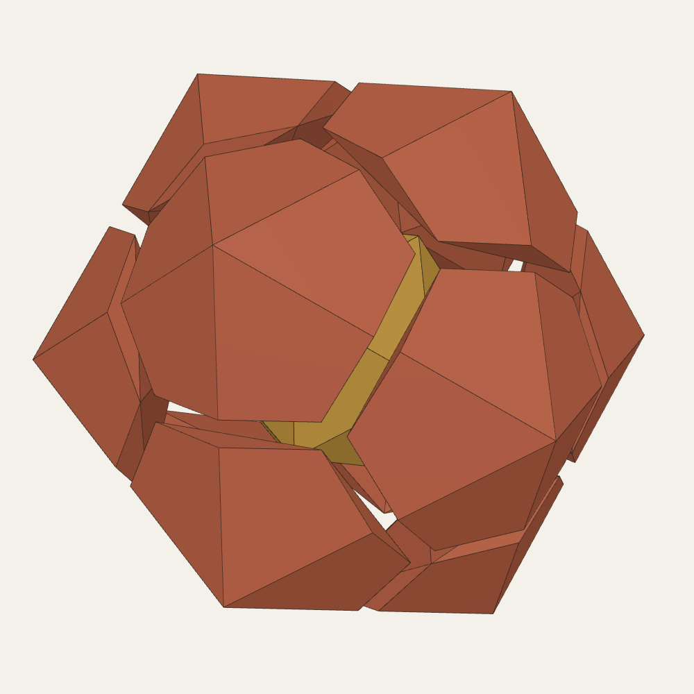
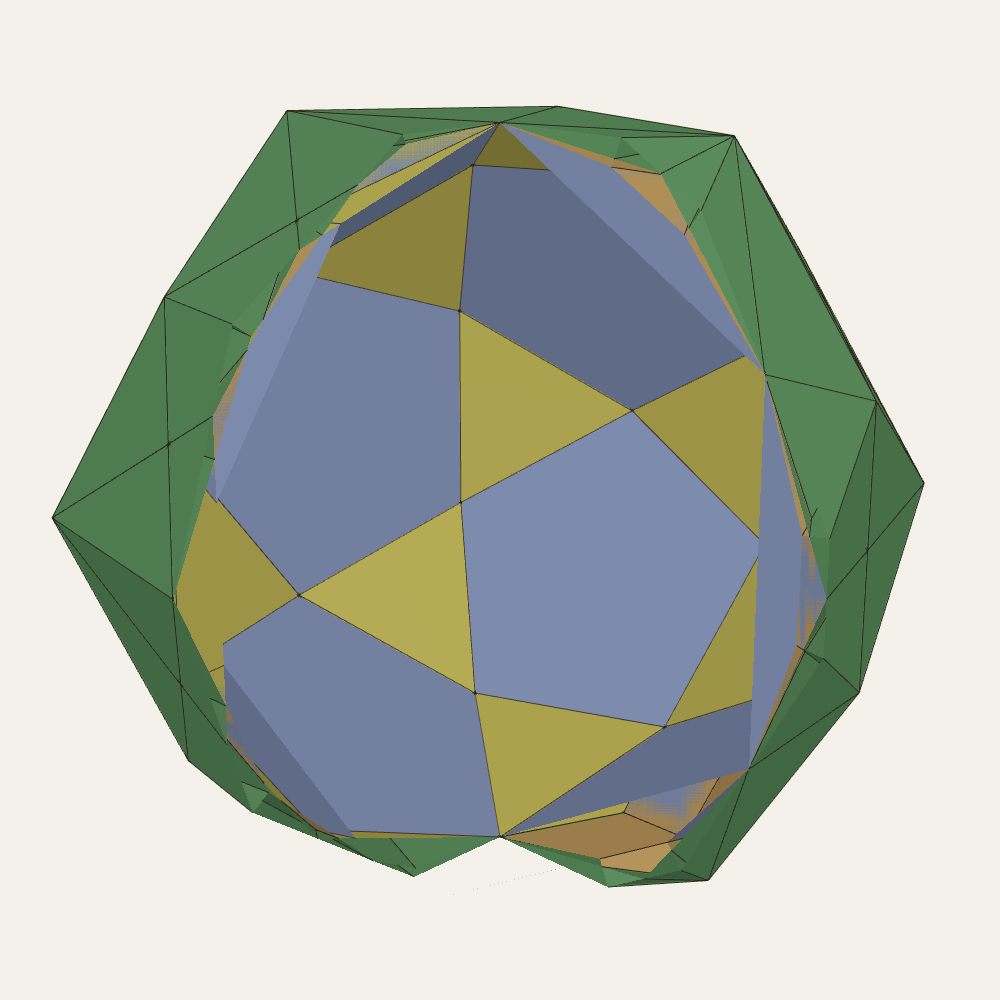

The DICTO PiTet Proposition: an endless, self-polar four-solid cycle grown from the Cleo star, ID → RT → DICTO GTI → DICTO FPD → ID × 10/φ⁴, with exact shell pieces, five-sided Vajras and hexagonal Cleos
Nested polyhedra with one centre are old: Kepler's Mysterium cosmographicum [14] set the Platonic solids between concentric spheres, and Pacioli and Leonardo drew them as skeletons [15]. They are also physical: the atomic clusters of icosahedral quasicrystals are concentric shells on the same solids, a dodecahedron inside an icosahedron and icosidodecahedron, or an icosahedron inside a dodecahedron [16], and Mackay's dense icosahedral packing of equal spheres grows in icosahedral shells [17]. The octet truss fills flat space with tetrahedra and octahedra [18]. Curved space can do it with tetrahedra alone (the 600-cell [4, 7]), and seen from one vertex the 600-cell's shells begin icosahedron, dodecahedron, icosahedron, icosidodecahedron [19]. DICTO's idea was to build a five-fold, spherical version in our own space: start from the Cleo star (the icosahedron as 20 Cleo-Icos with 20 more turned out as spikes, DICTO DOI: 10.5281/zenodo.23378070), and grow outward shell by shell, the same pattern each time with different solids, with multi-sided Vajras in the place of the octet's octahedra and kinds of CLEO and FUJI among the pieces. He observed that triangles are the true constant: in every shell built here, every face where two pieces meet is a triangle, and pentagons, hexagons and rhombi appear only on the shells' surfaces.
The rule. For a convex solid S with corners v, let T(S) = {x : v·x ≤ v·v for all corners v of S}. Each face of T(S) passes through a corner of S, at right angles to the line from the centre to that corner, so the corners of S touch the faces of T(S) ("points meeting", DICTO). When all the corners of S lie on one sphere, T is ordinary polar reciprocation about that sphere; when they lie at several radii it is not, and that difference is what drives the cycle. The rule needs no square roots, so everything below stays in ℚ(√5). In the plane the same construction about a point is classical: the antipedal polygon, whose sides pass through the vertices at right angles to the lines from the point; T is its three-dimensional form about the centre (see §6) [26, 27].
The DICTO PiTet Proposition. Let ID be the icosidodecahedron of circumradius φ. Then (i) T(ID) is the rhombic triacontahedron RT, T(RT) is the DICTO GTI, T(GTI) is the DICTO FPD, and T(FPD) = (10/φ⁴)·ID exactly; hence T4n(ID) = (10/φ⁴)n·ID for every n, since T commutes with scaling. (ii) Each solid lies inside the next. (iii) Each shell between consecutive solids is filled exactly by one piece per face of the inner solid (the cone from the centre over that face, cut by the outer solid), the pieces falling into one or two congruence classes (Table 2). (iv) The chain is its own polar: reciprocation about the sphere of radius² 15 − 5√5 = 10/φ² (the GTI's circumsphere) swaps GTI ↔ FPD, RT ↔ ID·10/φ⁴ and ID ↔ RT·10/φ⁴.
Proof method. All coordinates are pairs of rationals a + b√5 with exact signs. Floating point is used only to guess which three faces meet at a corner; every guess is then proved exactly: each corner solves its faces and lies inside every face; every face holds at least three corners with all others inside it; every edge lies in exactly two faces and V − E + F = 2, so the corner list is complete. Congruence of pieces is proved by the 60 exact rotations of the icosahedral group; volumes are exact; the shells' sums equal their gaps with remainder exactly 0. The scripts (exact_cycle.py, exact_shells.py, exact_polar.py) run in seconds.
| Station | Faces | Corners (radius) | Note |
|---|---|---|---|
| ID | 20 triangles, 12 pentagons | 30 (φ) | start of each turn |
| RT | 30 rhombi | 12 (2RI ≈ 1.902), 20 (√3) | polar of the ID |
| DICTO GTI | 12 regular pentagons, 20 hexagons, sides 1 : φ | 60 (√10/φ ≈ 1.954) | the icosahedron cut at 1/(2+φ) of each edge, not 1/3; all corners on one sphere |
| DICTO FPD | 60 isosceles triangles | 12 (≈ 2.008), 20 (≈ 2.205) | polar of the GTI; flatter pyramids than the Catalan pentakis dodecahedron |
| ID·10/φ⁴ | the ID again | next turn | |
Table 1. The stations of one turn (radii in the frame where the icosahedron has edge 1 and RI = its circumradius). The cycle alternates polar steps (from the ID and the GTI, whose corners lie on one sphere) and non-polar steps (from the RT and the FPD); the non-polar steps join the two classical dual pairs ID–RT and GTI–FPD into one cycle and fix the gain 10/φ⁴.


| Shell | Pieces | Exact volume of each | Gap (exact) |
|---|---|---|---|
| ID → RT | 12 on pentagons, 20 on triangles | 5/12; 3/8 − 17√5/120 | 25/2 − 17√5/6 |
| RT → GTI | 30 on rhombi | (3 − √5)/4 = 1/(2φ²) | 45/2 − 15√5/2 |
| GTI → FPD | 12 on pentagons, 20 on hexagons | (67475 − 30175√5)/72 ≈ 0.0229; (5681 − 2534√5)/36 ≈ 0.4112 | (259235 − 115865√5)/18 |
| FPD → ID·10/φ⁴ | 60 on triangles | (77875 − 34825√5)/27 ≈ 0.1457 | (1557500 − 696500√5)/9 |
Table 2. One piece per face of the inner solid; each kind is one symmetry orbit, so its pieces are congruent; each next turn repeats them 10/φ⁴ larger. In every shell the walls between neighbouring pieces are triangles.
Stage 1, the Cleo star. The icosahedron of edge 1 as 20 Cleo-Icos, 20 spikes, 12 inward pentagonal pyramids and 30 valley tetrahedra: 82 pieces filling the dodecahedron D′ of circumradius φ²/√3 exactly, with no overlap.
Stage 2, Monkey Staff B. The tightest ID round D′ has every corner of D′ exactly at the centre of one of its triangles. The gap is filled by 12 congruent twisted frusta, DICTO's Monkey Staff B (the D′ pentagon below, the ID's pentagon above turned 36°, ten triangles round the side), each of volume (145 + 37√5)/648.
Stage 3 and the five-sided Vajra. The ID → RT shell can also be cut into 12 five-sided and 20 three-sided pyramids and 60 valley tetrahedra (92 pieces, exact, no overlap). (Version 1 called the three-sided pyramid DICTO's CLEO. A corner-by-corner shape test shows it is not: it has a lower point, about 2.17 times its base radius high against CLEO's φ² ≈ 2.618.) On each five-fold axis the Cleo star's inward pyramid, Monkey Staff B and the outward five-sided pyramid join into one convex double-pointed piece, a five-sided Vajra of volume 55/108 + 5√5/36, reaching from the icosahedron's corner to the RT's.
Hexagonal Cleos. The DICTO Ogdoecontahedron (OG; DICTO DOI: 10.5281/zenodo.23404688) fits exactly between the ID and the RT: at this size its corners are the ID's 30 corners, the 60 points 2c − v (v a corner of an ID triangle, c its centre) and 12 apexes, and its 20 regular hexagons lie in the ID's triangle planes, each centred on a corner of D′. ID → OG is filled by 12 congruent pieces; OG → RT by 20 pure hexagonal Cleos (regular hexagon base, apex at the RT's three-fold corner, each 1/4 − √5/12), 60 kite pyramids from the RT's five-fold corners (each 1/76 + √5/684) and 120 tetrahedra (each 1/24 − √5/72), all exact, with no overlap.


Endless shells round a pyramid core. The closest prior art we found is Bergman's continuous spherical truss [1]: an icosahedral nucleus of twenty tetrahedral pyramids surrounded by an endless sequence of space-filling icosahedral-spherical tetrahedron–octahedron layers of equal thickness, every layer of the same kind. The idea of a pyramid core with endless octet-like spherical shells is therefore not new, and we do not claim it. Lalvani [6] built icosahedral space structures from polygonal members along the two-fold axes, periodic or not, without a centre.
Central icosahedral fillings. Kramer [2] filled space round a centre with icosahedral symmetry using seven convex cells that pack into a dodecahedron and into copies of themselves τ³ larger [20]; Mosseri and Sadoc reduced the cells to four [20, 24], and two of those are DICTO's AXE and CLEO [11, 21]. That growth is a golden self-similar inflation; the UP gain 10/φ⁴ ≈ 1.459 is not a power of φ, and UP's shells are four different solids, not copies of one.
Duals, reciprocation and the stations. The ID and RT are a classical dual pair [4, 5]; Hart's canonical polyhedra make any dual pair meet at a common midsphere [3], and plain reciprocation has period 2. Truncated icosahedra with two edge lengths arise as orbits of the icosahedral group [19, 22]; the DICTO GTI is the member whose hexagon sides are in the ratio 1 : φ, and the DICTO FPD is its polar, a pentakis dodecahedron flatter than the Catalan one. What is claimed is these golden proportions as forced by the rule; their faces are not regular, but they are convex, planar, fully icosahedral and exact. The RT's stellations [23] and the Kepler–Poinsot solids [4] belong to the taller version of §7.
The rule T (added in Version 3). T is the three-dimensional form of the antipedal construction of plane geometry, and its reverse, whose corners are the feet of the perpendiculars from the centre to the faces, is the “face pedal polyhedron” that Smarandache posed as an open problem in 2010 [26]; iterated pedal and antipedal triangles are studied in [27]. A later search for a companion paper found these; Versions 1 and 2 reported no source for T. We found no study of T for polyhedra, of its iteration, or of the cycle below.
Not found. In the sources checked (the full text of the 87 library sources listed in the appendix, and web searches on 19 October 2026 for iterated reciprocation, nested icosahedral shells, and the four stations in sequence) we did not find the rule T applied to polyhedra, the four-step cycle with gain 10/φ⁴, its self-polarity about the GTI's circumsphere, the shell pieces, Monkey Staff B, the five-sided Vajra or the hexagonal Cleos in OG hexagons.
The same rule run outward from the OG gives the DICTO KRE, PHE, TPP and DPHP, which nest only as far as the TPP (to be reported separately). A taller version with true Kepler–Poinsot spikes (the great and small stellated dodecahedra alternating, gain φ³ a turn) is being studied, following DICTO's "think stellation, think Gaudí". Twelve OGs packed freely round one show no symmetry at all (float search), consistent with the geometrical frustration of icosahedral order in flat space [7, 25] that the shells sidestep.
Exact scripts: exact_cycle.py (the cycle), exact_shells.py (the shell pieces), exact_inner.py (Cleo star, Monkey Staff B, fine cut, OG stage, Vajra), exact_polar.py (self-polarity); float exploration: progression.py, hexstage.py, stage4.py, stage5.py, stepper.py; results in data/*.json. The interactive world (shells, Vajras, hexagonal Cleos, and the cycle film peeling station by station without end) is in the Kaleidohedra app.
DICTO's reference library (private copies, with public citations in the Kaleidohedra repository's docs/SOURCES.md). The full text of the 87 sources below was searched on 19 October 2026 for this paper's subjects: polar reciprocation and duals; nested or concentric polyhedral shells; the icosidodecahedron, rhombic triacontahedron, truncated icosahedra and pentakis dodecahedra; the octet truss; the 600-cell; Mackay and quasicrystal clusters; stellations and the Kepler–Poinsot solids. Bergman [1] was added to the library for this paper.
| Author(s) | Year | Title |
|---|---|---|
| Luca Pacioli, Leonardo da Vinci (ill.) | 1509 | Divina proportione |
| Albrecht Dürer | 1525 | Underweysung der Messung mit dem Zirckel und Richtscheyt |
| Wenzel Jamnitzer, Jost Amman (engr.) | 1568 | Perspectiva corporum regularium |
| Johannes Kepler | 1596 | Prodromus dissertationum cosmographicarum continens Mysterium cosmographicum |
| Johannes Kepler | 1619 | Harmonices mundi libri V |
| E. S. Fedorov | 1885 | Elements of the Theory of Figures (Nachala ucheniya o figurah) |
| Euclid, T. L. Heath (tr.) | 1908 | The Thirteen Books of Euclid's Elements, Vol. III (Books X-XIII) |
| M. Goldberg | 1937 | A class of multi-symmetric polyhedra |
| R. Buckminster Fuller | 1954 | Building construction (geodesic dome) |
| R. Buckminster Fuller | 1961 | Synergetic building construction (octet truss) |
| R. Buckminster Fuller | 1962 | Tensile-integrity structures |
| Kenneth D. Snelson | 1965 | Continuous tension, discontinuous compression structures |
| Peter J. Pearce | 1971 | Synthesized natural geometric structures |
| Stephen C. Baer | 1973 | Structural system |
| John P. Hogan | 1976 | Homohedral construction employing icosahedron |
| Peter J. Pearce | 1976 | Minimum inventory maximum diversity building system |
| Haresh Lalvani | 1988 | Building structures based on polygonal members and icosahedral symmetry |
| Helmut Bergman | 1988 | Continuous spherical truss construction (US 4,719,726) |
| Haresh Lalvani | 1990 | Transformational part-count in layered octahedral-tetrahedral truss configurations (NASA TM-102635) |
| H. Lalvani | 1995 | Periodic space structures composed of two nodal polyhedra for design applications (US 5,448,868) |
| P. W. Messer | 1995 | Stellations of the rhombic triacontahedron and beyond |
| H. Lalvani | 1997 | Building systems with non-regular polyhedra based on subdivisions of zonohedra (US 5,623,790) |
| M. Baake, F. Gähler | 1998 | Symmetry structure of the Elser-Sloane quasicrystal |
| T. C. Hales | 1998 | An overview of the Kepler conjecture |
| M. Baake | 1999 | A guide to mathematical quasicrystals |
| O. Ogievetsky, Z. Papadopolos | 1999 | On Quasiperiodic Space Tilings, Inflation and Dehn Invariants |
| U. Betke, M. Henk | 1999 | Densest lattice packings of 3-polytopes |
| Z. Papadopolos, O. Ogievetsky | 1999 | On Inflation Rules for Mosseri-Sadoc Tilings |
| Z. Papadopolos, O. Ogievetsky | 1999 | On quasiperiodic space tilings, inflation and Dehn invariants |
| R. V. Moody | 2000 | Model sets: a survey |
| M. Senechal | 2004 | Donald and the golden rhombohedra |
| Wikipedia contributors (2007 mirror) | 2007 | Kyushindo (2007 version) |
| M. Koca, M. Al-Ajmi, N. O. Koca | 2009 | Grand antiprism and quaternions |
| M. Koca, M. Al-Ajmi, N. O. Koca | 2009 | Quaternionic representation of snub 24-cell and its dual polytope derived from E8 root system |
| S. Torquato, Y. Jiao | 2009 | Dense packings of polyhedra: Platonic and Archimedean solids |
| B. Grünbaum | 2010 | The Bilinski dodecahedron, and assorted parallelohedra, zonohedra, monohedra, isozonohedra and otherhedra |
| P. Kramer | 2010 | Gateways towards quasicrystals |
| A. M. Cutler, E. Schulte | 2011 | Regular polyhedra of index two, I |
| D. Frettlöh | 2011 | Icosahedral tilings in R3: the ABCK tilings (draft chapter) |
| J. Koskinen | 2011 | Unusual tilings and transformations |
| J. de Graaf, R. van Roij, M. Dijkstra | 2011 | Dense regular packings of irregular non-convex particles |
| M. Koca, N. O. Koca, M. Al-Ajmi | 2011 | Branching of the W(H4) polytopes and their dual polytopes under the Coxeter groups W(A4) and W(H3) represented by quaternions |
| M. Koca, N. O. Koca, M. Al-Barwani | 2011 | Snub 24-cell derived from the Coxeter-Weyl group W(D4) |
| T. Etzion | 2011 | Product constructions for perfect Lee codes |
| A. Garber, A. Gavrilyuk, A. Magazinov | 2012 | The Voronoi conjecture for parallelohedra with simply connected delta-surface |
| J. C. Lagarias, C. Zong | 2012 | Mysteries in packing regular tetrahedra |
| M. Baake, U. Grimm | 2012 | Mathematical diffraction of aperiodic structures |
| M. Koca, N. O. Koca, R. Koc | 2012 | Affine Coxeter group Wa(A4), quaternions, and decagonal quasicrystals |
| P. F. Damasceno, M. Engel, S. C. Glotzer | 2012 | Crystalline assemblies and densest packings of a family of truncated tetrahedra and the role of directional entropic forces |
| R. Gabbrielli, Y. Jiao, S. Torquato | 2012 | Families of tessellations of space by elementary polyhedra via retessellations of face-centered-cubic and related tilings |
| S. Torquato, Y. Jiao | 2012 | Organizing principles for dense packings of nonspherical hard particles: not all shapes are created equal |
| M. Kléman | 2013 | Defects in quasicrystals, revisited: I-flips, approximants, phason defects |
| N. Fujita, H. Takano, A. Yamamoto, A.-P. Tsai | 2013 | Cluster packing geometry for Al-based F-type icosahedral alloys |
| P.-P. Dechant, J. Wardman, T. Keef, R. Twarock | 2014 | Viruses and fullerenes: symmetry as a common thread? |
| A. Campello, G. C. Jorge, J. E. Strapasson, S. I. R. Costa | 2015 | Perfect codes in the lp metric |
| K. Deguchi, M. Nakayama, S. Matsukawa, K. Imura et al. | 2015 | Crystal structure of superconducting 1/1 cubic Au-Ge-Yb approximant with Tsai-type cluster |
| M. Baake, D. Damanik, U. Grimm | 2015 | What is aperiodic order? |
| M. Firsching | 2015 | Computing maximal copies of polytopes contained in a polytope |
| N. O. Koca, M. Koca, A. Al-Mukhaini, A. Al-Qanobi | 2015 | Quaternionic representations of the pyritohedral group, related polyhedra and lattices |
| R. Twarock, M. Valiunas, E. Zappa | 2015 | Orbits of crystallographic embedding of non-crystallographic groups and applications to virology |
| C. Hann, J. E. S. Socolar, P. J. Steinhardt | 2016 | Local growth of icosahedral quasicrystalline tilings |
| R. M. K. Dietl, J.-H. Eschenburg | 2016 | The icosahedral quasiperiodic tiling and its self-similarity |
| A. Stergiou | 2018 | Bootstrapping hypercubic and hypertetrahedral theories in three dimensions |
| A. Garber | 2019 | Voronoi conjecture for five-dimensional parallelohedra |
| D. Poland, S. Rychkov, A. Vichi | 2019 | The conformal bootstrap: theory, numerical techniques, and applications |
| R. Twarock, A. Luque | 2019 | Structural puzzles in virology solved with an overarching icosahedral design principle |
| T. Ishimasa | 2019 | Icosahedral quasicrystal, 1/1 and 2/1 approximants in Zn-based ternary alloys containing Au and Yb/Tb |
| A. Al-Siyabi, N. O. Koca, M. Koca | 2020 | Icosahedral Polyhedra from D6 lattice and Danzer's ABCK tiling |
| M. Koca, R. Koc, N. O. Koca, A. Al-Siyabi | 2020 | Icosahedral tiling with dodecahedral structures |
| N. O. Koca, R. Koc, M. Koca, A. Al-Siyabi | 2020 | Dodecahedral Structures with Mosseri-Sadoc Tiles |
| V. R. Krishnamurthy, E. Akleman, S. G. Subramanian et al. | 2020 | Bi-axial woven tiles: interlocking space-filling shapes based on symmetries of bi-axial weaving patterns |
| V. R. Krishnamurthy, E. Akleman, S. G. Subramanian, M. Ebert, J. Cui, C. Fu, C. Starrett | 2022 | Geometrically interlocking space-filling tiling based on fabric weaves |
| B.-X. Lao, S. Rychkov | 2023 | 3D Ising CFT and exact diagonalization on icosahedron: the power of conformal perturbation theory |
| D. Smith, J. S. Myers, C. S. Kaplan, C. Goodman-Strauss | 2023 | An aperiodic monotile |
| R. Akpanya et al. | 2024 | Topologically interlocking blocks inside the tetroctahedrille |
| I. J. Dejter, L. R. Fuentes, C. A. Araujo | 2025 | Perfect truncated-metric codes in lattice graphs and superlattice graphs |
| S. Rychkov | 2025 | Conformal bootstrap: from Polyakov to our times |
| M. Kovačević | 2026 | An isodiametric theorem and lattice diameter-perfect codes in A3 |
| R. Al Raisi, N. O. Koca, M. Koca, R. Koc | 2026 | Modified Mosseri-Sadoc tiles from D6 |
| Wikipedia contributors | 2026 | Fullerene |
| Wikipedia contributors | 2026 | Goldberg polyhedron |
| Wikipedia contributors | 2026 | Kenshiro Abbe |
| Wikipedia contributors | 2026 | Kyūshindō |
| Wikipedia contributors | 2026 | Mitsusuke Harada |
| Wikipedia contributors | 2026 | n-flake (Sierpinski icosahedron) |
| Betke Henk 2000 Densest lattice packings of 3 polytopes | ||
| INDEX |